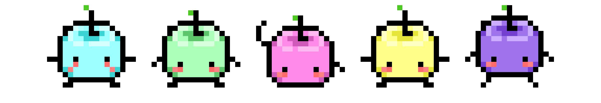

I was born in 1997 in Surabaya, Indonesia, into a family that represents a melting pot of diverse Indonesian cultures. As a result, I can speak and/or understand several local languages, including Javanese, Gorontalo, and Larantuka. This rich cultural background sparked my passion for language learning and my curiosity about different cultures internationally. Currently, I am learning Chinese to connect with my roots and French for fun.
In 2015, I moved to Germany to pursue higher education. Since then, I have lived in Schwäbisch Hall, Munich, Halle (Saale), and currently reside in Düsseldorf. Learning German and adapting to a new culture was certainly challenging, but with persistence and the unwavering support of family and friends, I have successfully built a life here.
To balance things out, I also enjoy creative activities such as drawing, singing, playing the guitar and gaming in my spare time.
